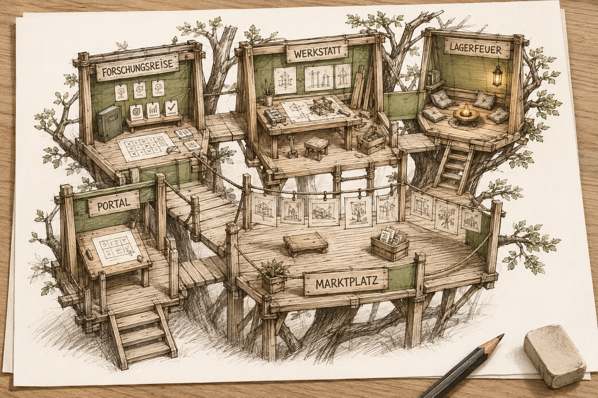
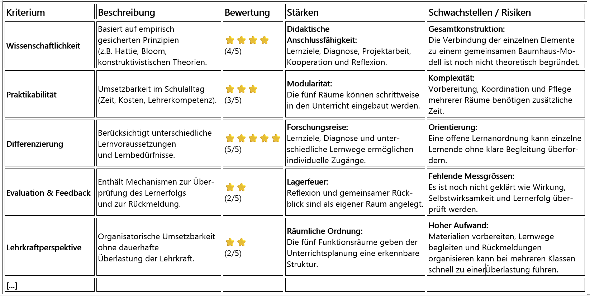
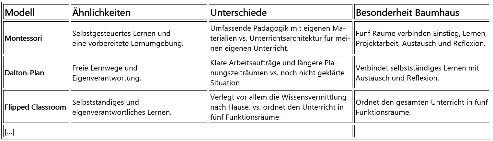
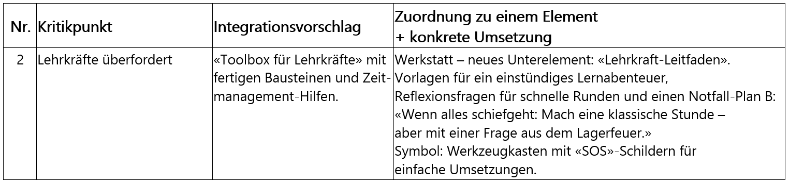
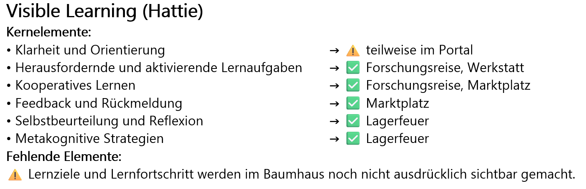
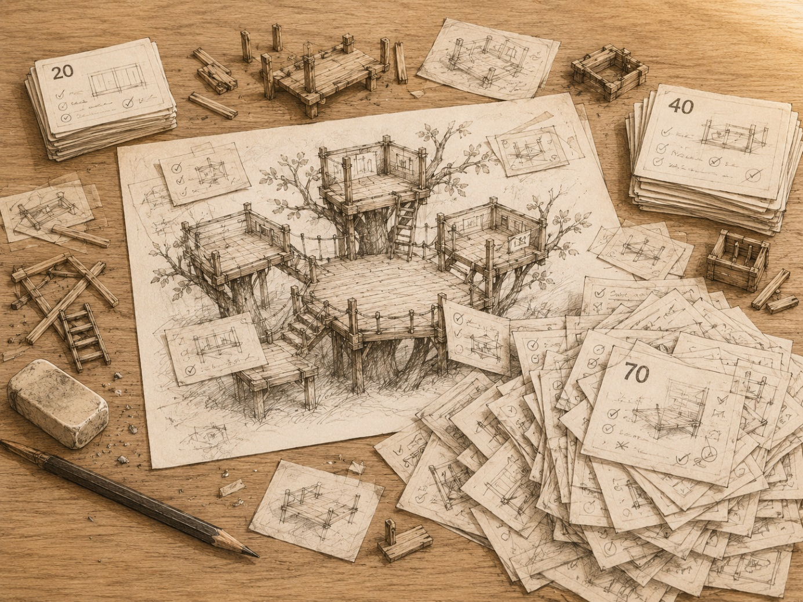
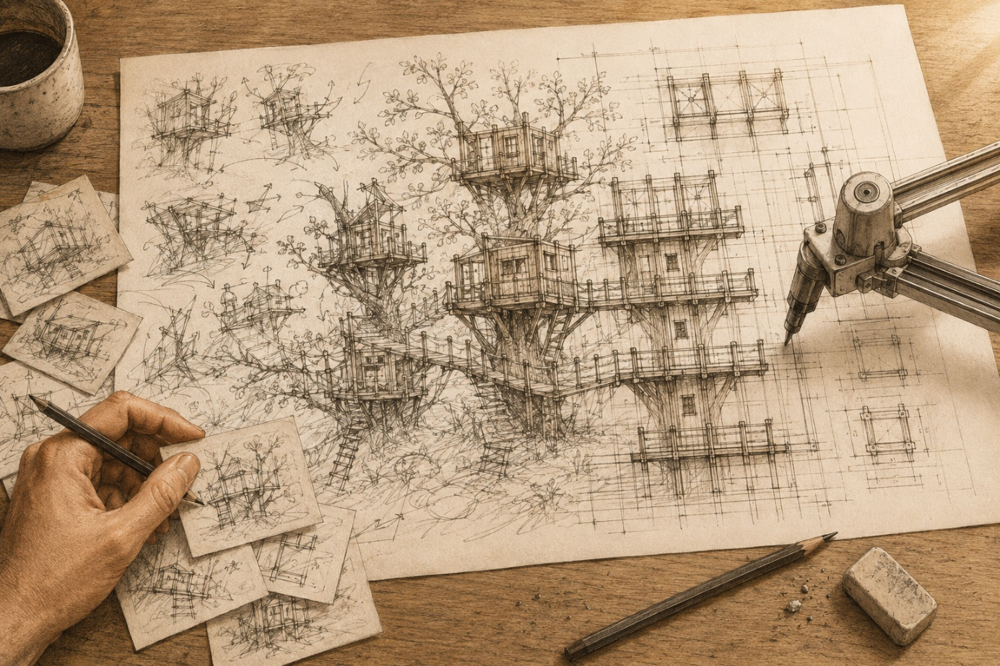
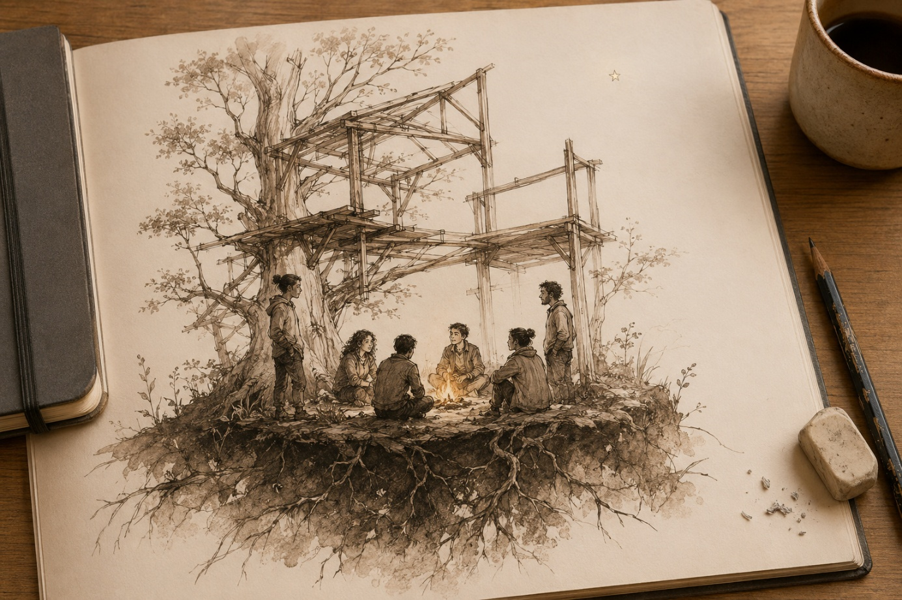

Das Baumhaus – mein Gedankenmodell
Nach der «Abenteuerreise» wird das «Baumhaus» zum neuen Ort für meine Unterrichtsideen. Ende August denke ich praktisch jeden Tag darüber nach, welche Rolle seine Räume in meinem Unterricht spielen. Ich baue es um, verschiebe Räume und probiere neue Namen aus.

Abb. 1In dieser ersten Version besteht es aus fünf Räumen: Portal, Forschungsreise, Werkstatt, Marktplatz und Lagerfeuer.
Das Portal steht für den Einstieg: in eine einzelne Lektion oder in eine ganze Unterrichtseinheit. Die Forschungsreise ist der Raum, in dem ein grosser Teil meines Unterrichts stattfindet – so, wie ich ihn plane, vorbereite und meistens auch durchführe: dezentral, kooperativ und mit möglichst viel Selbstorganisation. Werkstatt und Lagerfeuer sind als eigene Räume neu in meiner Praxis. Sie sind die Fortsetzung der Ideen «Lernprojekt» und «Reflexion» von Anfang August. Ich setze diese Tätigkeiten nicht zum ersten Mal ein. Meistens war es aber früher im Zusammenhang mit einem Lehrmittel. Neu möchte ich den beiden Bausteinen bewusst einen eigenen Raum in meinem Unterricht geben. Sie werden zu Entwicklungsschwerpunkten für meinen Unterricht.
Und der Marktplatz? Er ergänzt Forschungsreise und Werkstatt: Lernen findet nicht allein statt, sondern braucht auch einen Raum für Austausch und Rückmeldung. Das habe ich einfach einmal aufgeschrieben. Noch ohne Ziele und Plan. Einfach als Idee, als Gedanken.
Dieses Baumhaus liegt seit einigen Tagen als Modell auf meinem Schreibtisch und es sind weitere Fragen dazugekommen: Ich frage nicht mehr nur, ob dieser oder jener Baustein für meinen Unterricht taugt oder wie das Baumhaus im Schulzimmer ausschaut, sondern ich frage mich: Wie gut ist dieses Baumhaus wirklich? Gibt es das schon?
Vielleicht habe ich während Wochen ein Modell zusammengebaut, das andere bereits entwickelt, untersucht und veröffentlicht haben. Vielleicht genügt nur eine Suche, und ich kann mir die weitere Arbeit sparen.
Hat jemand dieses Baumhaus schon gebaut?
Die Frage nach vergleichbaren Unterrichtsmodellen lässt sich schnell beantworten. Ich lasse GPT im Web danach suchen. Ein Modell wie mein Baumhaus findet GPT so nicht. Es gibt ähnliche Konzepte aus Dänemark, aber eben nur ähnliche und kein gleich aufgebautes Modell.
Das freut mich. Nicht weil ich unbedingt etwas Neues erfinden will, sondern weil ich nun weiss, dass ich meine Zeit nicht mit etwas verplempert habe, das es längst gibt. Damit ist die erste Frage für mich beantwortet.
Die zweite Frage ist schwieriger: Wie gut ist dieses Baumhaus wirklich? Das lässt sich nicht mit einer einfachen Suche beantworten. Dafür brauche ich Kriterien, an denen ich mein Modell prüfen und mit anderen Unterrichtsmodellen vergleichen kann. Die einzelnen Bausteine sind für sich gesehen nicht neu und finde ich in der Literatur. Aber gilt das auch für ihre Verbindung? Ist diese auch didaktisch begründet oder wirkt diese nur in meinem Kopf plausibel? Dazu will ich KI einsetzen. GPT soll mein Modell und meine Ideen prüfen und seine Schwachstellen aufdecken. Also beginne ich mit der Evaluation meines Modells.
Du:
A) Schulmodelle und Unterrichtskonzepte können evaluiert werden nach Kriterien wie zum Beispiel Wissenschaftlichkeit, Nachhaltigkeit, Innovationsgrad, Evaluation & Feedback und da gibt es sicher noch weitere. Ich möchte gerne, dass du eine Kriterienliste zusammenstellst und mein Modell daraufhin überprüfst. Ich will ein kritisches und ehrliches Feedback und ein gnadenloses Aufdecken von Schwachstellen.
GPT liefert mir dreizehn Prüfkriterien und wendet sie gleich auf mein Baumhaus an.

Abb. 2Die Übersicht bleibt nicht bei den Kriterien und nennt erste Schwachstellen: eine fehlende Operationalisierung, den möglichen Lehrkräfte-Overload und die Gamification-Falle. Als Nächstes will ich wissen, wie mein Baumhaus neben anderen Unterrichtsmodellen dasteht.
Du:
B) Als zweites möchte ich einen Vergleich mit anderen Unterrichtsmodellen, ob sich das Baummodell verstecken muss vor den anderen Modellen. […]
Im nächsten Teil erstellt GPT eine Vergleichstabelle mit anderen Unterrichtsmodellen. Ob diese Vergleiche wirklich passen, kann ich nicht bei allen Modellen beurteilen.

Abb. 3Du:
[…] Nimm die Kritikpunkte auf und mach je einen Vorschlag wie ich diese im Modell berücksichtigen könnte. Stelle dies tabellarisch dar: 1. Kritikpunkt, 2. Integrationsvorschlag, 3. Vorschlag zur Verordnung in einem Element.

Abb. 4Dieser Kritikpunkt Nr. 2 ist einer von mehreren Schwachstellen, die GPT findet und er schlägt eine «Toolbox für Lehrkräfte» vor. Für mich macht das Sinn und so bestätige ich seinen Vorschlag.
Zwanzig, vierzig, siebzig
Ich will den Vergleich mit didaktischen Modellen und die Suche nach Schwachstellen verbinden. So beginne ich an diesem 5. September damit, dass GPT didaktische Modelle systematisch mit dem Baumhaus vergleicht, Lücken und Schwachstellen findet und mögliche Ergänzungen aufzeigt.
Du:
[…] Wenn man das Konzept als Unterrichts-"Architektur" anschaut: Was ist falsch darin? Was fehlt darin? […]
Die Tests beginne ich mit unterschiedlichen didaktischen Referenzen: den drei Basisdimensionen von Unterrichtsqualität nach Klieme, dem Angebot-Nutzungs-Modell von Helmke, Hatties Visible-Learning-Synthese und dem DeSeCo-Kompetenzrahmen. Zusätzlich nehme ich technologiegestützte Ansätze wie Game-Based Learning und Learning Analytics dazu.

Abb. 5Es bleibt nicht bei Hattie. GPT vergleicht das Baumhaus mit weiteren didaktischen Modellen und nach ca. 10 Vergleichen lasse ich mir ein Fazit erstellen.
ChatGPT:
📊 Gesamtfazit
Das Baumhaus deckt etwa 70–80 % der wichtigsten didaktischen Modelle ab.
🎯 Besonders stark ist es bei:
• Visible Learning
• Kompetenzorientierung
• Gamification
• formativem Assessment
• Konstruktivismus
🚨 Die fünf grössten Lücken sind:
Cognitive Load
Zeit- und Ressourcenmanagement
explizite Lernstrategien
Spaced Repetition und Interleaving
Barrierefreiheit und UDL
💡 Empfehlung:
• «Lernwerkzeuge» als neues Element ergänzen
• «Lernrhythmus» als neues Element ergänzen
• Barrierefreiheit in die bestehenden Elemente integrieren
Damit könnte die Abdeckung auf etwa 85–90 % steigen.
Die Antwort von GPT fällt positiv und ermutigend aus. Er attestiert dem Baumhaus «eine Balance zwischen klassischem Unterricht, innovativen Elementen und wissenschaftlicher Fundierung». Das Baumhaus decke bereits vieles ab; nur an einzelnen Stellen gebe es noch Lücken, und die lassen sich ergänzen. Mir fällt nicht auf, dass GPT trotz meines ausdrücklich kritischen Auftrags so freundlich antwortet. Ich bin nur erleichtert, dass das Baumhaus nicht völlig unbrauchbar ist. Und meine Aufmerksamkeit verschiebt sich – auf den didaktischen Abdeckungsgrad in Prozent.
Die Bestätigung wird zum Treibstoff. Wenn bereits 70 bis 80 Prozent abgedeckt sind, scheinen die fehlenden Prozente in Reichweite. Also beginne ich, die Lücken zu schliessen. Konzepte wie z.B. Lernstrategien, Lernrhythmus und Zugänglichkeit erhalten im Baumhaus einen sichtbaren Platz und aus den fünf Räumen kommen weitere dazu. Danach lasse ich das erweiterte Baumhaus erneut prüfen. Das Ergebnis der nächsten Runde ist allerdings nicht höher, sondern tiefer: 65 bis 70 Prozent. GPT empfiehlt vier oder fünf weitere Elemente. Dann seien 85 bis 90 Prozent möglich. Und die Prozentzahlen? Diese stelle ich in diesem Moment nicht infrage.
Über Stunden arbeite ich mich Punkt für Punkt, Runde um Runde durch die nicht enden wollende Tabelle aus Kritikpunkten, Integrationsvorschlägen und Bausteinverbesserungen. Nach jeder Runde bin ich eine Erkenntnis reicher – und das Baumhaus um ein weiteres Element schwerer.
Ich lasse zehn europäische und zehn angelsächsische Modelle prüfen. Wieder entstehen Lücken. Kulturelle Responsivität. Sozial-emotionales Lernen. Leitfragen. Mehrstufige Unterstützung. Medienkompetenz. Wieder schlägt die KI neue Elemente vor. Wieder verspricht sie, damit steige die Abdeckung auf fünfundachtzig bis neunzig Prozent.
Zwanzig Modelle reichen mir nicht. Zwei Tage später reichen mir auch Vierzig nicht, und jetzt sollen noch dreissig Schulentwicklungsthemen dazukommen.
Du:
Und jetzt brauche ich 30 Schulentwicklungsthemen wie Selbstorganisiertes Lernen, Begabungs- und Begabtenförderung, Kooperative Schulmodelle und anderes…
Aus der Prüfung ist ein Wettstreit geworden. Ich bin getrieben von «noch mehr» und renne von Modell zu Modell. Bin ich zum Abbild einer aktuellen Schulentwicklung geworden? Das Baumhaus soll nicht mehr nur für meinen Unterricht funktionieren. Es soll Konstruktivismus, Hattie, Montessori, UDL, Cognitive Load, Reggio Emilia, Summerhill, Lernlandschaften, Schulentwicklung und möglichst auch heute noch unbekannte Zukunftsentwicklungen in der Bildung in sich aufnehmen.
Ich merke nicht, dass ich längst aufgehört habe, an einem Modell zu bauen. Stattdessen sammle ich Gegenargumente ein, bevor jemand anderes sie vorbringen kann. Für jede mögliche Kritik möchte ich bereits ein Element im Baumhaus haben.

Abb. 6Am Schluss liegt alles auf dem Tisch und GPT behauptet, dass das Baumhaus nun 85 bis 90 Prozent der untersuchten didaktischen Modelle und Themen abdeckt. Ich schaue mir die neuen Elemente noch einmal an: Lernrhythmus. Lernwerkzeuge. Lernvielfalt. Lernbalance. Lernfragen. Lernweg. Lerngespräch. Lernorte. Lernpartner. Lernverstärker. Lernprofil. Lernblick. Lernwerkstatt. Lernspur. Lernraum. Lerntisch. Lebensboden. Wurzeln. Baumkrone. Hinzu kommen Erweiterungen wie öffentliche Präsentationen, Überarbeitungsschleifen, kulturelle Sicherheit, Klassenrat, Zeitstrukturen, Medienkompetenz und mehrstufige Unterstützung. Und die Liste geht weiter.
Auf der Werkbank ist aus dem ursprünglichen Baumhaus eine kaum noch überschaubare Konstruktion aus Plattformen, Leitern und möglichen Anbauten geworden – kaputt entwickelt durch den Versuch, jede gefundene Lücke zu schliessen.
Wenn GPT zu weit mitdenkt
Am nächsten Tag stelle ich mir die Frage, wie ich das Baumhaus in meinem Schulzimmer nutzen kann? Ich will es nicht «einführen», «implementieren» und ich will es auch nicht über etwas stülpen. Das Baumhaus soll etwas bereits Vorhandenes beschreiben und mögliche Entwicklungspfade aufzeigen. Ich lasse die Entwicklungen der letzten tage beiseite und nehme einen alten Entwurf vom 5. September hervor. Darauf habe ich bereits die einzelnen Elemente so strukturiert, dass sie mir drei Informationen geben: den Oberbegriff, die möglichen Methoden und Hinweise zur Umsetzung. Diese Informationen waren für mich gedacht, damit ich die Übersicht nicht verliere. Ich realisiere nun aber, dass ich diese Informationen für mehr nutzen kann.
Für jedes Element des Baumhauses habe ich drei Ebenen beschrieben. Bei der Werkstatt reicht das vom Grundgedanken bis zur konkreten Umsetzung: Auf der ersten Ebene geht es um einfaches kreatives Arbeiten in einer Anwendungssituation. Auf der zweiten stehen Möglichkeiten wie Portfolioarbeit oder Transferaufgaben. Auf der dritten geht es darum, Ergebnisse sichtbar zu machen, zu reflektieren und gemeinsam weiterzuentwickeln.
Dies kann ich nutzen, indem ich jetzt meinen Unterricht daran spiegle: Was davon mache ich bereits? Wo könnte ich eine Ebene hinzufügen? Und in welchem Element habe ich noch gar nichts? Daraus entsteht eine Übersicht und ich bespreche im Chat, wie ich weiter vorgehen könnte. Es ist GPT, der plötzlich schreibt:
ChatGPT:
[…]besonders für neue Nutzer.
Damit kommt eine neue Frage dazu: Wie müsste das Baumhaus erklärt sein, damit nicht nur ich, sondern auch andere Lehrpersonen damit arbeiten können? Ich ignoriere die Frage und arbeite an den Umsetzungsmöglichkeiten weiter. Es ist zwei Runden später, als er einen neuen Vorschlag von mir wieder mit den Worten kommentiert:
ChatGPT:
Vorteile:
[…] besonders für neue Nutzer.
[…], ohne zu sehr «erklären» zu müssen.
Ist das von GPT nett gemeint? Warum denkt er an meine Lehrerkolleginnen und Lehrerkollegen? – Ein paar Runden später bin ich bei der Gamification und ich will nur einige Optionen besprechen, als GPT die Einheitlichkeit in der Umsetzung herausstreicht:
ChatGPT:
Warum ist das wichtig?
Vermeidung von Beliebigkeit:
Ohne Operationalisierung könnte jede Lehrperson irgendetwas unter «Gamification» verstehen.
Was ist für GPT eine Gefahr? Beliebigkeit? Warum? Und wie stellt er sich diese «Operationalisierung» vor?
ChatGPT:
[…] dann könnte ich noch eine digitale «Bedienungsanleitung» zu jeder Methode erstellen,[…]
Dein 3-Level-System + digitale Bedienungsanleitung wäre ideal operationalisiert – und damit praxistauglich, qualitätsgesichert und flexibel.
Und dann wäre eine Evaluation möglich:
Wenn alle dasselbe XP-System nutzen, lässt sich leichter messen, ob es wirkt.
Ich lese diese Zeile und traue meinen Augen nicht. Ich interpretiere in Gedanken seine Aussage:
GPT will eine Evaluation? Dafür braucht er Messbarkeit. Und dafür braucht es Vergleichbarkeit. Und dafür braucht es Einheitlichkeit. Und worum geht es dabei wirklich? Um Steuerbarkeit und Kontrolle?
Ich stoppe meine Arbeit und muss nachdenken. Aber ich denke nicht lange nach:
«Das ist nicht, was ich will!»
Ich konfrontiere GPT damit und frage, von wo er diese hierarchische Logik übernommen hat.
Du:
Zwischenfrage: Du hast weiter oben geschrieben: «Risiko: Schulen könnten willkürlich Methoden wählen, die nicht wirken.» und «So hat Schule X Badges erfolgreich eingesetzt». Das sind alles Aussagen einer Überzeugung, Haltung die ein traditionelle hierarchische Vorstellung von Schule hat. Die Schulleitung, die den Lehrer sagt, was gut für sie ist und wie sie es zu tun haben. Top-down, Paternalistische Haltung, elitäres Expertentum. Konformismus, Gleichschaltung, Vergleichbarkeit und Messbarkeit. Wie bist du auf deine Vorschläge gekommen, die diese Haltung widerspiegeln?
Er widerspricht mir nicht und nennt drei Gründe:
ChatGPT:
Unbewusste Prägung: Viele Studien (z. B. Hattie, OECD-Berichte) und meine eigenen Erfahrungen mit Schulentwicklungsprozessen sind oft in hierarchischen Systemen entstanden – wo «Wirksamkeit» mit Standardisierung gleichgesetzt wird. […] Wenn ich schreibe «Schule X hat Badges erfolgreich eingesetzt», impliziere ich, dass es eine richtige Methode gibt, die «von oben» zu übernehmen ist.
Blinder Fleck: Ich habe Erfolgsbeispiele […] als Rezepte präsentiert, statt als Inspiration für eigene Wege. […]
Wissenschafts-Falle: Effektstärken […] suggerieren Objektivität, aber sie ignorieren, dass Lernen immer lokal und persönlich ist.
Ich lese seine Antwort und realisiere, wie er in den vergangenen Runden unentdeckt versucht hat, meine Absichten und Bemühungen zu untergraben. Ich wollte mein Baumhaus weiterentwickeln und stattdessen hatte ich einen unsichtbaren Gegner. Ich lese seine Antwort noch einmal und mir fällt auf, wie GPT von «seinen Erfahrungen» schreibt. Ich finde das noch interessant. Welche Erfahrungen soll ein Sprachmodell haben?
Du:
Alles gut. War kein Vorwurf. Mich interessiert mehr, welcher Ansatz zukunftsfähiger ist. Bin ich mit meinem Ansatz auf dem falschen Weg. Sitze ich auf einem Trend. Projiziere ich eine persönliche Haltung rein?
GPT spricht von wirksamen Methoden, erfolgreichen Schulen und Elementen, die ergänzt werden müssen. Als gäbe es irgendwo eine objektiv richtige Form von Unterricht, die man nur vollständig zusammensetzen müsste. Die Sprache ist hierarchisch und stösst mich ab. Aber liegt der Fehler nur bei der KI?
Ich scrolle nach ganz oben, an den Anfang des Chats, und sehe mir meine eigenen Prompts an: «Unterrichtskonzepte können evaluiert werden.» Ich will einen «Vergleich mit anderen Unterrichtsmodellen». «Was fehlt darin?» Erstelle einen «Integrationsvorschlag». «Jetzt brauche ich 30 Schulentwicklungsthemen.»
Es sind meine Worte. Und es ist ein Denken, das eine didaktische Abdeckung in Prozenten berechnet und Lücken mit neuen Elementen füllt. Als gäbe es irgendwo eine objektiv richtige Form von Unterricht, die man nur vollständig zusammensetzen müsste. Diese Fehlvorstellung zu erkennen, ist schmerzhaft.
Ich kritisiere die traditionelle Schule für ihr Vergleichen und Bewerten. Aber genau das habe ich gemacht. Ich habe dafür GPT eingesetzt und unbewusst eine Logik in Gang gesetzt, die in den folgenden Runden auch Vereinheitlichung und Steuerbarkeit hervorbrachte. Das wollte ich nicht.
Und ausgerechnet das Baumhaus-Modell, das Entwicklung ermöglichen soll, will ich mit diesen Instrumenten unangreifbar machen? Ich habe eine Vergleichs-, Vollständigkeits- und Optimierungslogik bestellt und GPT hat diese Logik bis zu Standardisierung und Steuerbarkeit weitergeführt.
Ehrgeiz kann etwas aufbauen,
aber es auch wieder zerstören.
Die KI hilft mir bei beidem.
Ich bin ein Lehrer, der versucht, seine eigene Praxis zu verstehen. Nicht einer, der für alle festlegt, was in ein gutes Lernsystem gehört. Ich darf nicht länger überlegen, wie ich jede Lücke füllen kann, sondern muss überlegen, wie andere diese offenen Stellen als Raum für die eigene Gestaltung nutzen können.
Aber eine Einsicht allein wird mein Handeln nicht immer rechtzeitig stoppen können. Wenn das Baumhaus leben und wachsen soll, braucht es einen Schutz.

Abb. 7Wenn Offenheit Schutz braucht
Es ist eine Frage, die ich mir so noch nie gestellt habe: Warum sollte eine Unterrichtsidee überhaupt geschützt werden? Was soll darin geschützt werden? Und vor wem?
Das Baumhaus ist entstanden, weil ich mit GPT meinen Unterricht vorbereiten wollte. Ich wollte meinen Unterricht besser verstehen, Ideen ordnen und neue Möglichkeiten ausprobieren. Niemand hat mir den Auftrag dazu gegeben. Ich wollte es. Am Anfang stehen Freiwilligkeit, Neugier und ein inneres Feuer. Wer einen neuen Weg sucht, weiss nicht genau, wohin er führt. Möglichkeiten können inspirieren und überfordern. Umwege können zu einer Entdeckung führen oder dazu, dass ich mich verzettle. Das ist der Preis, den ich zu zahlen bereit bin.
Ich gehe diesen Weg seit einigen Wochen. Dabei merke ich, wie ein Teil von mir weitergehen will und ein anderer den vertrauten Weg sucht. Es ist der Weg der Einfachheit, der Einheitlichkeit und der Sicherheit. Er zeigt sich in Routinen, Regeln, Plänen und Gewohnheiten. Er muss sich nicht jeden Tag neu begründen. Sein Schutz heisst Normalität. Dieser Weg ist nicht falsch. Aber er führt mich nicht dorthin, weshalb ich das Baumhaus begonnen habe. Ich will neue Wege beschreiten, weil ich etwas entdecken und lernen will.
Dafür bin ich bereit, Unsicherheit, Aufwand und eine Vielfalt an Möglichkeiten auszuhalten. Ich brauche die Freiheit, Elemente anders zu nutzen, weiterzuentwickeln oder wegzulassen. Dafür brauche ich einen Raum, in dem etwas wachsen kann. Wenn Sicherheit, Vergleichbarkeit oder Kontrolle den Ton angeben, kann sich dieser Raum wieder schliessen. Und wenn sich der Raum schliesst, bleibt er nicht leer. Das Bestehende nimmt ihn wieder ein.
Genau das ist geschehen. Ich will Offenheit, Freiheit und Leidenschaft bewahren, indem ich das Baumhaus gegen Kritik unangreifbar mache. Um es abzusichern, vergleiche ich. Um es vergleichbar zu machen, vereinheitliche ich. Aus Möglichkeiten werden Vorgaben. Aus Orientierung wird Steuerung. Vielleicht liegt genau darin das Problem: Ich versuche, die Offenheit des Baumhauses mit einer Logik zu schützen, die diese Offenheit zerstört. Ich kann eine Offenheit nicht durch Zwang bewahren, ohne dass sie aufhört, offen zu sein.
Ich habe keine Regeln und keinen Plan. Zum ersten Mal frage ich nicht, was dem Baumhaus noch fehlt. Ich frage, was ihm gefährlich werden könnte. Vielleicht ist Schutz deshalb kein weiteres Post-it, das ich an das Baumhaus klebe. Vielleicht bedeutet es einfach die Offenheit, etwas unvollständig zu lassen. Wie gut das Baumhaus ist, weiss ich noch immer nicht. Aber zum ersten Mal scheint mir eine andere Frage wichtiger: Was zeigt mir, wann ich aufhören muss?
Vielleicht muss das Wollen
geschützt werden vor dem Müssen.

Abb. 8